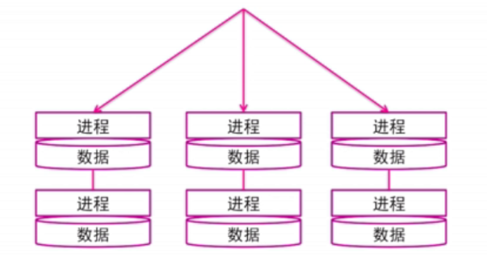
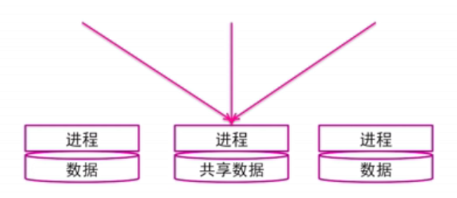
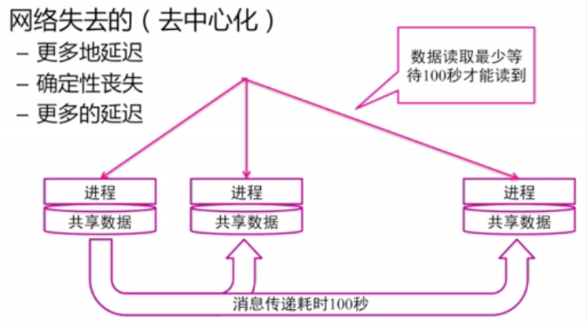
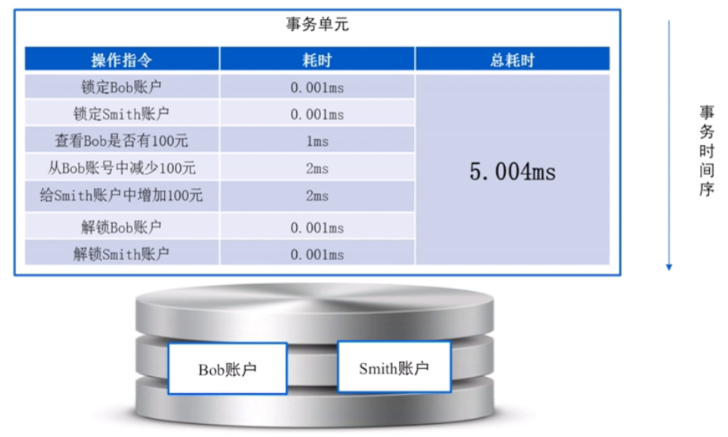
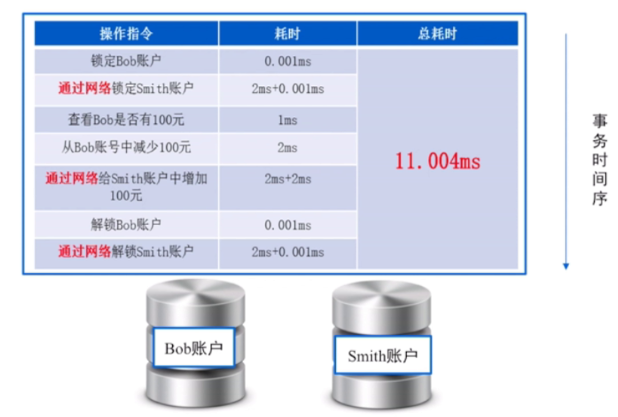

目标
完整的事务支持
- 像传统单机事务一样的操作方式
- 可按需无限扩展
分布式事务的尝试与问题
网络带来的，网络失去的
网络带来的（去中心化，无单点）
- 理论上无限的扩展能力
- 理论上无限的数据安全性 （replication）
- 理论上无限的服务可用性 （单机宕机）

网络失去的
共享数据困难
共享数据的方式：共享内存＋消息传递
共享内存的代价：共享内存会导致单点，内存瓶颈；

消息传递共享数据的代价
（1）更多的延迟（消息传递需要时间）
（2）确定性延迟（比如：丢包，不可达）
（3）更多的延迟（为了保证数据传输）

基于锁的事务实现中遇到的问题
从2PL 到 2PC
2PL：A和B在不同的机器上，如何保证提交原子性？
2PC：将commit解锁的过程在多台机器上进行；
新问题：（1）谁来负责跨机提交？（2）如何处理网络不可达？
Coordinator 协调器
（1）协调器负责跨机提交
（2）commit失败处理方式：努力送达（现代主流实现）＋停机等待人工处理
（3）协调者必须是多机，保证高可用；
（4）记录日志，协调者掌握事务运行的状态；


MVCC的顺序问题
分布式的困局：逻辑时间戳
MVCC的关键在于时间戳，单机下很容易实现逻辑时间戳，但是在分布式系统时间戳的分配成为问题；
- 一台机器去分配号码，这台机器就是单点；
- 一组机器分配号码？不同的时间戳机器同步递增很困难；
分布式事务的主要难点
- 事务延迟变大问题
- 事务异常处理 （单机容易处理，分布式难处理。协议成本网络成本进一步加大延迟）
- 日志记录 （保证事务持久性，记录很多日志，进一步加大延迟）
- MVCC的顺序问题 （时间戳分配，进一步加大延迟 ）
（1）系统不可用：机器宕机，网络中断，内存故障－>复制协议
（2）逻辑不可用：逻辑错误－>应用的回滚